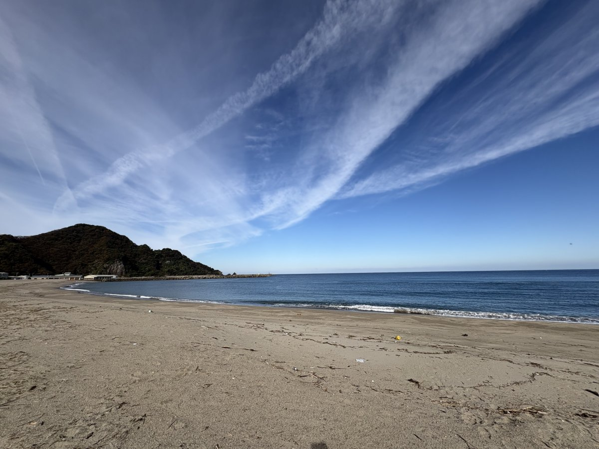

浜坂県民サンビーチの砂浜

浜坂県民サンビーチ
兵庫県美方郡新温泉町芦屋
掲載時点の料金です。最新の料金は公式サイトでご確認ください。
備考・犬連れでのポイント
山陰海岸国立公園（山陰海岸ユネスコ世界ジオパーク）の中にある、白い砂浜と黒松林が続く海水浴場。
入場は無料。海水浴場の開設期間（例年7月上旬〜8月中旬）以外は、リードを付けて犬と砂浜を散歩できる。
開設期間中に犬を連れて砂浜に入れるかは浜坂観光協会への事前確認推奨。
駐車場と砂浜の間には道路があり、乗り降りの際は車に注意。駐車場は約200台で、夏期と特別日は普通車1日1,500円（キャンプ等で1泊2日の場合は2倍）、それ以外の時期は無料。
公衆トイレは2棟で、9月〜翌6月は西側の1棟のみ。温水シャワーは1分100円。
浜でのバーベキューとキャンプは禁止で、キャンピングカーは利用不可。
フンは持ち帰りのこと。浜の背後の松林は松の庭キャンプ場で、キャンプ場の利用は別料金。
最新情報は浜坂観光協会の公式サイトで確認のこと。
運営者の訪問メモ
2026年11月12日に愛犬と訪問
運営者の愛犬、チワワのこつぶと平日の朝に砂浜を歩き、ほかに人も犬もいませんでした。この日は砂がやわらかく、歩くと足が深く沈み込みました。
掲載情報の最終確認：2026年11月26日
このスポットに行った記事（ブログ）
 浜坂の砂浜を散歩して、城崎温泉で食べ歩き。兵庫・浜坂と城崎1泊2日の犬連れ旅（2日目）
浜坂の砂浜を散歩して、城崎温泉で食べ歩き。兵庫・浜坂と城崎1泊2日の犬連れ旅（2日目）